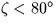
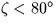
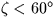
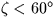
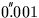
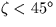

| HM | D | height of the observer above sea level (metre) |
|---|---|---|
| TDK | D | ambient temperature at the observer (degrees K) |
| PMB | D | pressure at the observer (mB) |
| RH | D | relative humidity at the observer (range 0-1) |
| WL | D | effective wavelength of the source ( |
| PHI | D | latitude of the observer (radian, astronomical) |
| TLR | D | temperature lapse rate in the troposphere (degrees K per metre) |
| EPS | D | precision required to terminate iteration (radian) |
| REFA | D | |
|---|---|---|
| REFB | D |
 accuracy for ,
accuracy for ,
 accuracy for , and
accuracy for , and
 accuracy for .
SLALIB --- Positional Astronomy Library